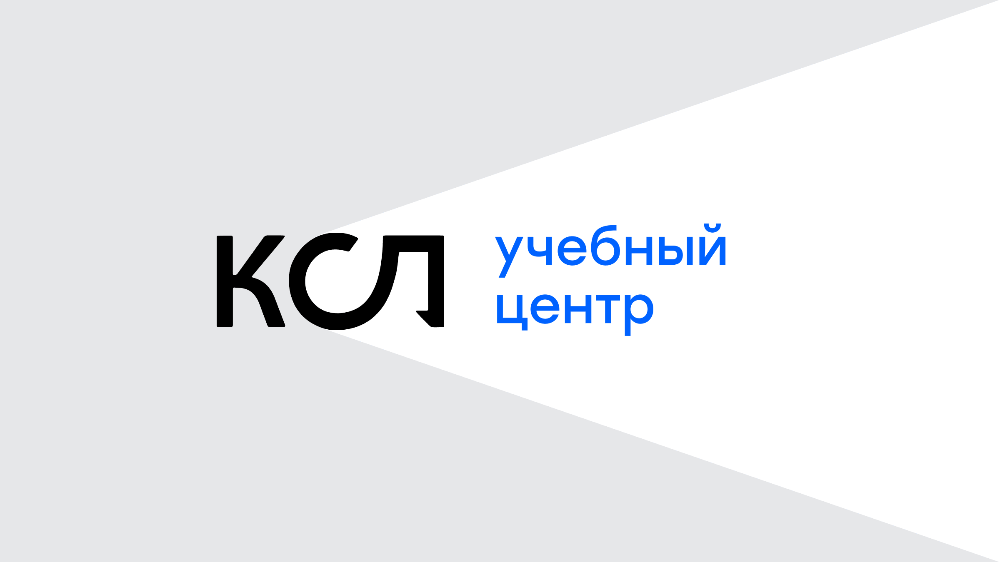

<!DOCTYPE html>
<html>
  <head>
    <title>Учебный центр КСЛ</title>
    <meta charset="UTF-8">
    <meta name="viewport" content="width=device-width, initial-scale=1">
    <meta name="theme-color" content="#377bed">
    <link rel="stylesheet" href="css/styles.css">
    <link rel="apple-touch-icon" sizes="180x180" href="apple-touch-icon.png">
    <link rel="icon" type="image/png" sizes="32x32" href="favicon-32x32.png">
    <link rel="icon" type="image/png" sizes="16x16" href="favicon-16x16.png">
    <link rel="manifest" href="site.webmanifest">
    <link rel="mask-icon" href="safari-pinned-tab.svg" color="#333333">
    <meta name="msapplication-TileColor" content="#ffffff">
    <!-- Yandex.Metrika counter -->
    <script type="text/javascript" >
       (function(m,e,t,r,i,k,a){m[i]=m[i]||function(){(m[i].a=m[i].a||[]).push(arguments)};
       m[i].l=1*new Date();
       for (var j = 0; j < document.scripts.length; j++) {if (document.scripts[j].src === r) { return; }}
       k=e.createElement(t),a=e.getElementsByTagName(t)[0],k.async=1,k.src=r,a.parentNode.insertBefore(k,a)})
       (window, document, "script", "https://mc.yandex.ru/metrika/tag.js", "ym");

       ym(22766821, "init", {
            clickmap:true,
            trackLinks:true,
            accurateTrackBounce:true
       });
    </script>
    <noscript><div></div></noscript>
    <!-- /Yandex.Metrika counter -->
  </head>
</html>
<body>
  <div class="inner--dark inner--learningcenter">
    <main class="inner">
      <header class="inner__header">
        <div class="inner__title">
          <h1>Учебный центр КСЛ</h1><span>Начало 2024</span>
        </div>
        <div class="inner__detail inner__sites"><a class="inner__site" href="https://www.ec-logistics.ru/" target="_blank"><span>ec-logistics.ru</span></a></div>
        <a class="inner__close" href="./">
          Закрыть<svg width="100%" viewBox="0 0 36 36" fill="none" xmlns="http://www.w3.org/2000/svg">
<path fill-rule="evenodd" clip-rule="evenodd" d="M21.2412 17.9965L33.8411 5.39665L30.5884 2.14396L17.9885 14.7438L5.40018 2.15545L2.14749 5.40814L14.7358 17.9965L2.14398 30.5884L5.39667 33.8411L17.9885 21.2492L30.5919 33.8525L33.8446 30.5999L21.2412 17.9965Z" fill="white"/>
</svg></a>
      </header>
            <div class="inner__container">
              <div class="inner__text">
                <p><a href="ksl.html">Координационный совет по&nbsp;логистике</a> занимается профессиональным образованием в&nbsp;сфере логистики и&nbsp;управления цепями поставок.</p>
                <p>Ко&nbsp;мне обратились за&nbsp;разработкой дизайна сайта с&nbsp;оглядкой на&nbsp;разработанный прежде стиль <a href="/ksl.html">КСЛ</a>.</p>
              </div>
            </div>
            <section class="sideblock sideblock--inner">
              <div class="sideblock__container inner__img"><picture><source srcset="img/learningcenter-2.avif" type="image/avif"></picture></div>
            </section>
            <div class="inner__container">
              <div class="inner__text">
                <p>Страница курса — самостоятельная посадочная: большинство приходит на&nbsp;неё напрямую, поэтому первый экран рассказывает всё главное.</p>
              </div>
            </div>
            <section class="sideblock sideblock--inner">
              <div class="sideblock__container inner__img"><picture><source srcset="img/learningcenter-3.avif" type="image/avif"></picture></div>
            </section>
            <div class="inner__container">
              <div class="inner__text">
                <p>Визуальный якорь — метафора проектора и&nbsp;прожектора. Он стал использоваться в&nbsp;социальных сетях и&nbsp;рассылках.</p>
              </div>
            </div>
            <section class="sideblock sideblock--inner">
              <div class="sideblock__container inner__img"><picture><source srcset="img/learningcenter-1.avif" type="image/avif"></picture></div>
            </section>
            <!--<div class="inner__container">
              <div class="inner__text">
                <p>Стенд КСЛ на конференции включает в себя в том числе стиль Учебного центра:</p>
              </div>
            </div>
            <section class="sideblock sideblock--inner">
              <div class="sideblock__container inner__img"><picture><source srcset="img/mmlf-2.avif" type="image/avif"></picture></div>
            </section>-->
      <nav class="inner__nav"><a href="./">На&nbsp;главную</a><span><a href="traktor.html">ХК «Трактор»</a>&nbsp;<span class="inner__nav-next">→</span></span></nav>
        <!--<div class="inner__nav-arrow"><svg width="100%" height="100%" viewBox="0 0 30 30" fill="none" xmlns="http://www.w3.org/2000/svg">
<path d="M14.6124 0.563661L13.3161 1.86002C13.0093 2.16684 13.0093 2.66433 13.3161 2.97122L23.4734 13.1285H1.11774C0.683834 13.1285 0.332031 13.4803 0.332031 13.9142V15.7475C0.332031 16.1814 0.683834 16.5332 1.11774 16.5332H23.4734L13.3161 26.6905C13.0093 26.9974 13.0093 27.4948 13.3161 27.8017L14.6124 29.0981C14.9193 29.4049 15.4167 29.4049 15.7236 29.0981L29.4352 15.3865C29.7421 15.0797 29.7421 14.5822 29.4352 14.2753L15.7236 0.563661C15.4167 0.256774 14.9193 0.256774 14.6124 0.563661Z" fill="white"/>
</svg>
</div></a>-->
    </main>
  </div>
  <script src="js/close.js?v=2" defer></script>
</body>
